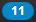

Rispondere agli inviti di attività
Se un utente o un collaboratore esterno vi aggiunge a un'attività come partecipanti, riceverete almeno una delle seguenti notifiche:
Sarà possibile accettare, accettare provvisoriamente o rifiutare la partecipazione all'attività.
Come rispondere all'invito di un'attività nell'area informazioni:
Fare clic sull'icona Nuovi oggetti nella barra dei menu . L'area informazioni viene visualizzata.
Sotto Inviti, fare clic su Accetta/Rifiuta.
Digitare un commento nella finestra Cambia lo stato di conferma. Fare clic su uno dei pulsanti Conferma, Provvisorio, Rifiuta.
Come rispondere all'invito a un'attività in un invito tramite posta:
Visualizzare un messaggio di posta con un invito a un'attività nell'applicazione Posta elettronica .
Fare clic su uno dei pulsanti Conferma, Provvisorio, Rifiuta nell'area di visualizzazione sotto Questo messaggio contiene un'attività.